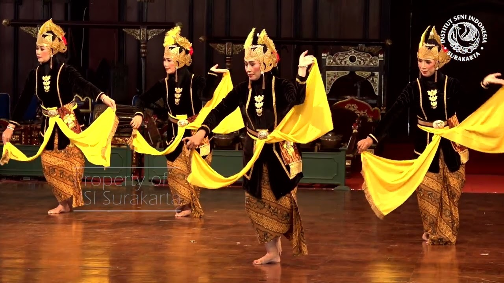

Sebelum kata-kata ditemukan, ada gerak. Tari-tarian tradisional di Karanganyar bukan sekadar tontonan — mereka adalah bahasa tubuh yang menyimpan kisah-kisah leluhur. Setiap gerakan, dari posisi jari yang meruncing hingga arah tatapan mata, telah dimaknai dan diwariskan dari satu penari ke penari berikutnya selama berabad-abad.
Gerak yang Diwarisi dari Keraton
Banyak tarian tradisional di Karanganyar tumbuh dari pengaruh budaya keraton Surakarta yang menyebar ke wilayah pedesaan sekitarnya. Tari Bedhaya, Srimpi, hingga berbagai tari topeng berkembang di sanggar-sanggar desa yang menjaga pakem geraknya dengan ketat, sambil tetap memberi ruang bagi interpretasi lokal masing-masing komunitas.
"Menari bukan sekadar bergerak. Setiap gerakan adalah doa yang disampaikan lewat tubuh."
Fakta Menarik
- Sebagian besar tarian tradisional Karanganyar memiliki pakem gerak yang diturunkan secara lisan dari guru ke murid
- Kostum tari biasanya dibuat dengan kain batik khas daerah, menyatukan dua warisan budaya sekaligus
- Beberapa tarian hanya boleh ditampilkan pada momen tertentu — upacara adat atau penyambutan tamu kehormatan
- Sanggar-sanggar tari lokal kini mulai membuka kelas untuk umum sebagai cara meregenerasi penari muda

Mengapa Penting?
Tari tradisional adalah museum yang bergerak. Setiap penari yang menekuni gerak ini sesungguhnya sedang menjaga sebuah bahasa kuno tetap hidup melalui tubuhnya sendiri. Ketika tidak ada lagi yang menari, bahasa itu punah — dan bersamanya hilang pula satu cara manusia memahami dirinya dalam hubungannya dengan alam dan kosmos.